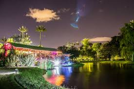
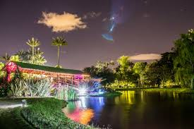

Santa Marta
Marzo de 2019, Colombia
Santa Marta, oficialmente Distrito Turistico, Cultural e Historico de Santa Marta, 4 es la capital del departamento de Magdalena, Colombia. Fue fundada el 29 de julio de 1525 por el español Rodrigo de Bastidas. Se encuentra a orillas de la bahia del mismo nombre. El balneario El Rodadero es uno de los principales destinos del Caribe colombiano.
Su casco urbano se encuentra entre la Sierra Nevada de Santa Marta y el mar Caribe y se halla a pocos kilometros del parque Tayrona. Entre sus atracciones culturales e historicos estan la Casa de la Aduana, la Catedral Basilica, la Biblioteca Banco de la Republica, el Seminario San Juan Nepomuceno, el camellon Rodrigo de Bastidas y los parques de Bolivar y de Los Novios.
Lago de Annecy
Abril de 2019 - Annecy, Francia
El lago de Annecy? es un lago de Alta Saboya, al este de Francia. Es famoso por ser uno de los lagos mas limpios del mundo. Ademas es el segundo lago mas grande de Francia tras el lago del Bourget, exceptuando la parte francesa del lago Leman. El lago se formo, durante el deshielo de los grandes glaciares alpinos.
Por una potente fuente submarina, el Boubioz, que nace a 82 m de profundidad. Esta rodeado: al este por el macizo de los Bornes; al oeste, por el macizo de los Bauges; al norte, por la aglomeracion de Annecy; y al sur, por un amplio valle.
Perfil del autor
Un escritor puede escribir lo que le de la gana siempre que sea capaz de hacerlo creer. La lista de los escritores colombianos recomendados la encabeza el premio Nobel colombiano autor de novelas como El coronel no tiene quien le escriba, La hojarasca, Cronica de una muerte anunciada y El amor en los tiempos del colera.